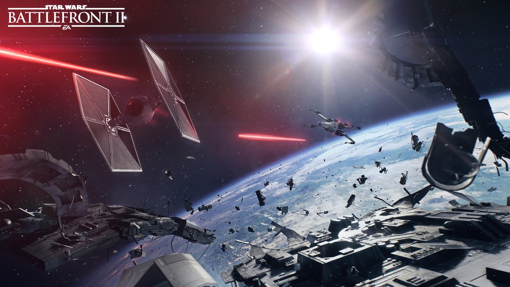
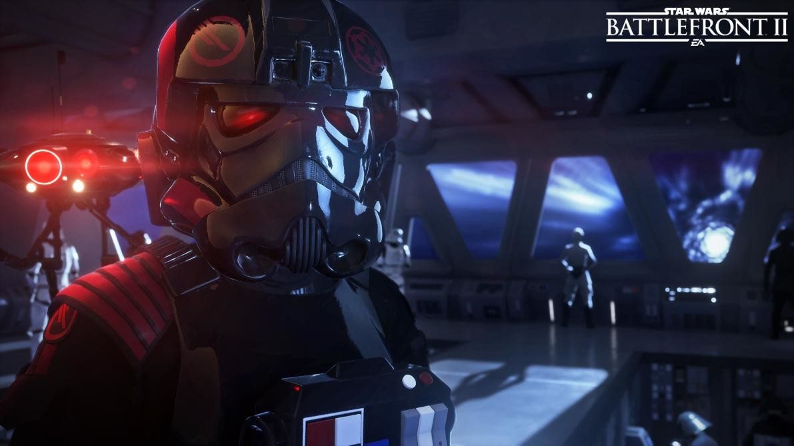
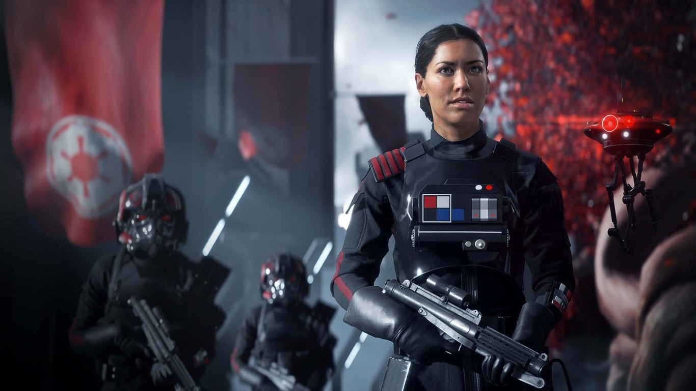
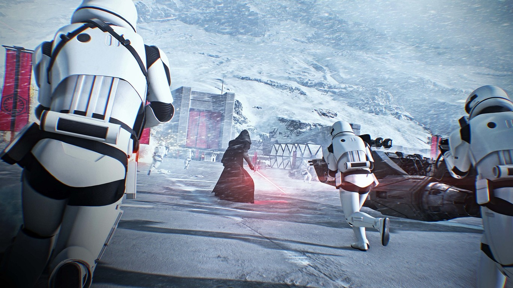
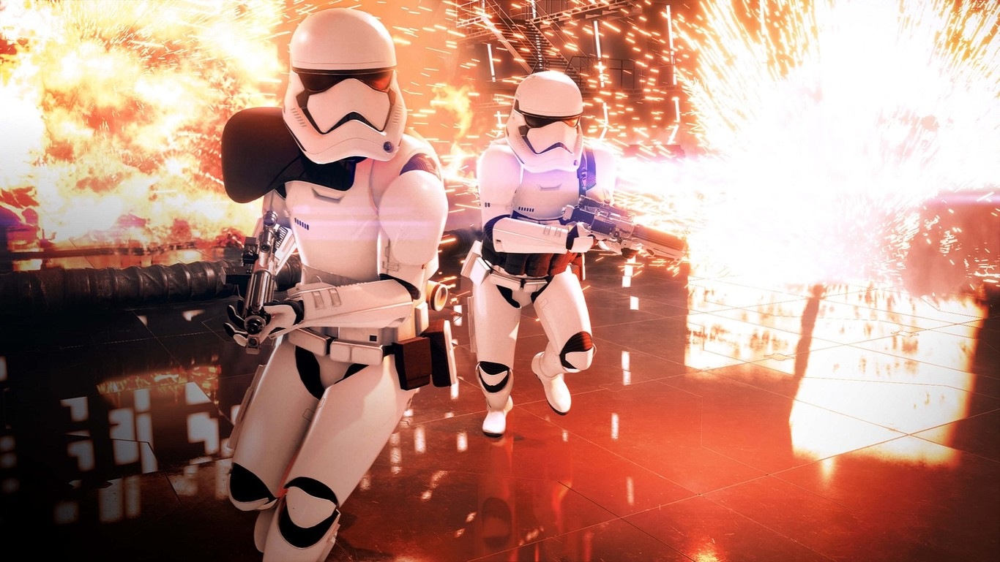
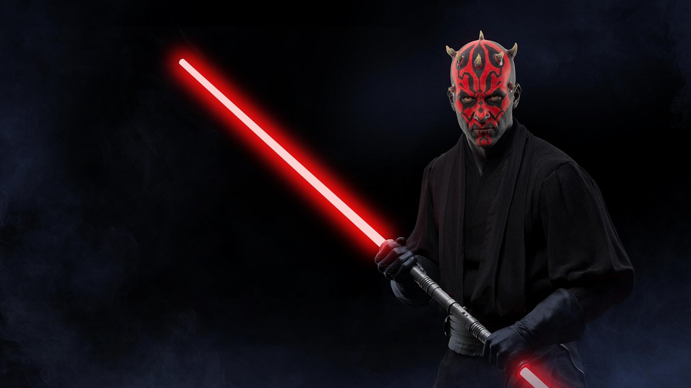
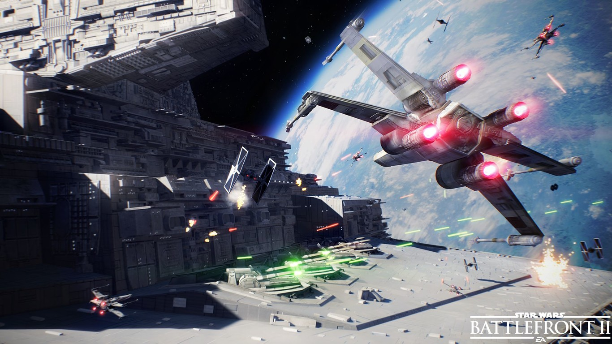

Todo lo que necesitas saber sobre Star Wars Battlefront II
La llegada de 'Los Últimos Jedi' coincidirá con el 40º aniversario
de la saga galáctica por excelencia y tanto Disney como Lucasfilm no repararán
en medios para celebrar esta alineación de astros, siendo 'Star Wars Battlefront II'
su propuesta estrella para consolas y PC
Corrigiendo los errores del pasado
Pero partamos de lo esencial, ¿qué vamos a encontrarnos en
'Star Wars: Battlefront II '? La respuesta debería ser la experiencia
de shooter definitiva ambientada en el universo creado por George Lucas,
y si sigue la línea del primero -corrigiendo sus carencias-
tiene muchas opciones de conseguirlo.
Al igual que en los dos 'Star Wars: Battlefront'
de la sexta generación de consolas, salvo en ocasiones muy especiales
tomaremos parte en conflictos bélicos multitudinarios como
un soldado raso que por lo general pertenecerá al Imperio
(incluso antes de convertirse en éste) o a los insurgentes,
ya bien siendo parte de los malvados separatistas o de una
alianza rebelde que acaba de aumentar sus probabilidades de éxito
gracias a la reciente incorporación de un inesperado
aprendiz de Jedi y uno de los mejores piloto de la galaxia.

Seremos un soldado que se jugará el tipo junto a otros cuarenta usuarios en unos
amplios mapeados que en esta ocasión inspirados en las localizaciones de las precuelas,
la trilogía original y una nueva era incluyendo Theed, Takodana, la base Starkiller, Yavin
, Mos Eisley, Endor o Hoth entre otras; aunque es bastante asumible que veamos algún planeta
creado para la ocasión como ya ocurrió en el anterior 'Battlefront'.
Por supuesto, podremos personalizar a nuestro personaje tanto en cuestión
de aspectos como a través de armas que podremos adquirir con los créditos que
obtengamos de cada batalla. Tendremos a nuestra disposición cuatro clases de soldado
(oficial, asalto, pesado y especialista) y un nutrido repertorio de blasters, explosivos y armas
esperando a que las pongamos a prueba.
Además, en estos amplios escenarios también tendremos acceso a majestuosos
vehículos que marcarán la diferencia, sólo que a diferencia del 'SW: Battlefront' original ahora deberemos
desbloquearlos a base de misiones. Eso sí, ya no echaremos en falta una de las carencias más sonadas de
'Star Wars: Battlefront' : las batallas ahora también se libran en el espacio. ¡Y menuda pinta!

No habrá pase de temporada... pero eso no
quiere decir que no haya DLCs
La historia de 'Star Wars: Battlefront' llegó a ser muy parecida a la tragedia de Anakin Skywalker:
una enorme promesa que acabó sucumbiendo al reverso tenebroso, aunque en este caso nos referimos un
apartado técnico vanguardista, una experiencia jugable muy pulida y con modos de juego más
que suficientes y batallas multitudinarias
en tierra o aéreas. ¿Qué es lo que salió mal?
En el primer 'Battlefront' de DICE nos encontramos con una experiencia a la que -a diferencia
de otros shooters- le paso una enorme factura el no disponer de un modo campaña y, a pesar de que recibió buenos
incentivos y contenidos gratuitos, que fases como el palacio de Jabba, el asalto a la estrella de la muerte o poder
jugar con Chewbacca se quedaran fuera del corte no ayudó demasiado a los que creyeron en el proyecto.

Llega la muy esperada campaña,
una historia que será canon en la saga
Junto con el abandono del modelo de pase de temporada, el mayor aliciente de esta
secuela será su modo campaña, y a pesar de que tendremos la posibilidad de realizar
misiones a lo largo de todas las épocas junto a los héroes y villanos más reconocibles
de la galaxia (como en 'Star Wars Battlefront II' de 2005) en esta ocasión se nos presentará
una nueva protagonista creada para la ocasión
y que forma parte del canon oficial de Star Wars.

Iden Versio iniciará una nueva trama argumental, y sus actos -y las consecuencias de estos-
forman parte del mismo universo que las películas, a diferencia de otros títulos desterrados a la
línea alternativa Leyendas como 'El Poder de la Fuerza', la saga 'Jedi Knight' o 'Shadows of the Empire'.
Sin embargo, Versio no es una aprendiz de Jedi o una aventurera rebelde: ella cree firmemente en los valores del
Imperio galáctico.
Interpretada por Janina Gavankar (True Blood) Versio es una agente especial del Imperio que
vio cómo el Emperador y la segunda Estrella de la Muerte se volatilizaron desde la propia
batalla de la Luna de Endor. Pero su historia comienza varios años antes.
Criada en Vardos, un planeta creado para el juego que sirve de utopía para el
modelo de Gobierno del Imperio, Versio no tardó en compartir las causas y valores
de este régimen, con lo que acabaría alistándose en el ejército y liderando el mismísimo
Escuadrón Infernal, siendo parte de la élite de las
fuerzas imperiales en múltiples disciplinas.

El punto de inicio de esta campaña comenzará con la victoria Rebelde en Endor y
que abarca el intervalo de 30 años entre 'El retorno del Jedi' y 'El despertar de la Fuerza',
permitiéndonos ahondar más en la historia oficial ocurrida entre ambas películas
y, de paso, poniéndonos en la piel de personalidades como Luke Skywalker o Kylo Ren
de manera eventual ¿y quién sabe si acabaremos a los mandos del Halcón Milenario?
De hecho, el Escuadrón Infernal contará con su propia novelización, la cual llevará
la firma de Christie Golden e incluirá toda clase de referencias a las producciones
del canon de Star Wars: desde 'Rogue One' hasta 'Los Últimos Jedi' pasando
por las 'Clone Wars' o la trilogía clásica.

¿El mejor juego de Star Wars jamás hecho?
La promesa de aprender de sus errores y las novedades son fantásticas,
pero no podemos olvidarnos de todo lo que ya destacaba en la anterior
entrega, y es que si dejamos de lado la indispensable B.S.O.
de John Williams que no podíamos dejar en el tintero, nos encontramos
con enormes mundos recreados con un enorme mimo y un apartado
técnico que aprovecha de maravilla el motor Frostbite.

Vuelven los combates multitudinarios, los múltiples modos de juego,
la experiencia más completa a pie o a bordo de los vehículos más
icónicos de la saga -sin olvidar que hemos visto un Tauntaun desbocado
en el tráiler- y los combates con sables de luz. Y en esta ocasión
hasta veremos la hoja doble de Darth Maul, aunque esperamos que en
esta ocasión el control de los héroes sea más próximo al
de otros juegos no tan recientes.
Pero además llegará con poco margen con respecto a 'Star Wars:
Los Últimos Jedi', contando con materiales asociados a la película
y siendo una oportunidad estupenda para recibir un adelanto del
siguiente blockbuster de las próximas navidades e ir caldeando el
ambiente de cara su estreno en carteleras.

El destino de la galaxia se juega el 17 de noviembre
y estas son las dos formas de abordarlo
'Star Wars: Battlefront 2' tiene previsto su lanzamiento para el 17 de noviembre y se han confirmado
al menos dos ediciones que ya se pueden reservar
tanto en físico como en digital para Xbox One, PS4 y PC. Eso sí,
de momento no se ha anunciado ningún tipo de contenido exclusivo para ninguna
de las plataformas, aunque si se conocen las bonificaciones que recibirán los
usuarios según la versión escogida, incluyendo un acceso anticipado de 3 días al
juego para los que apuesten por la edición Deluxe.
